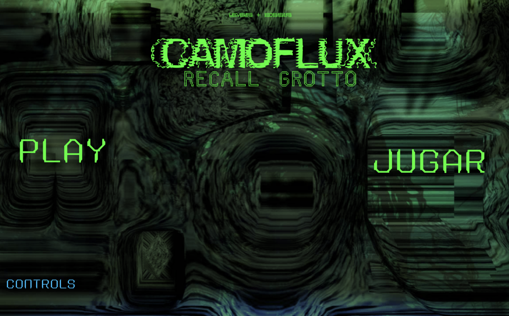
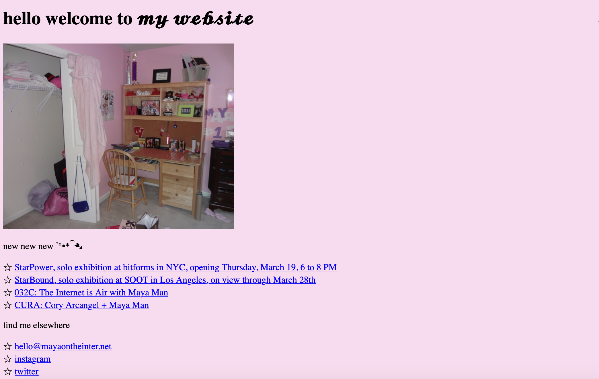
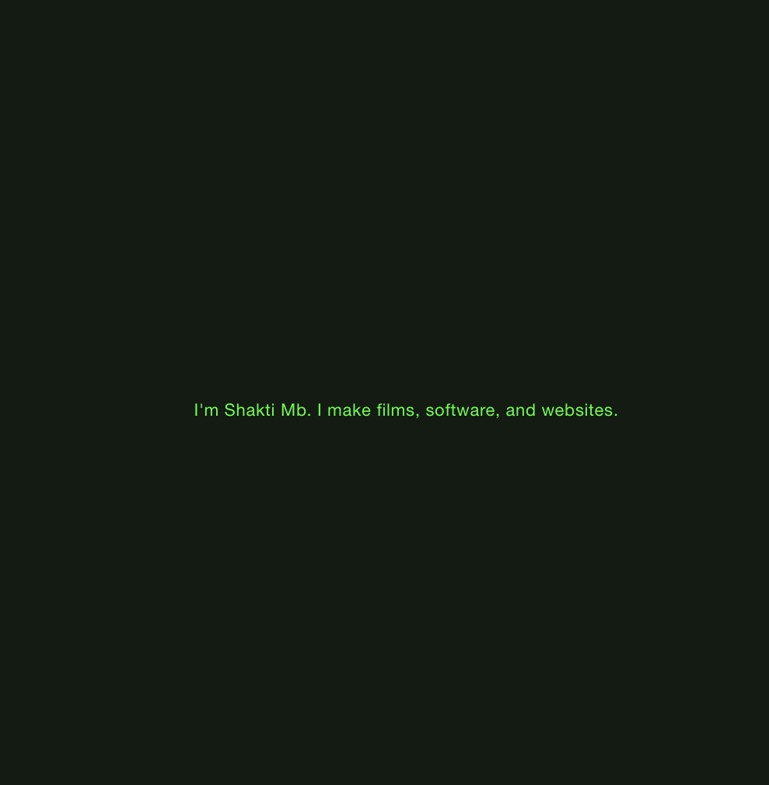
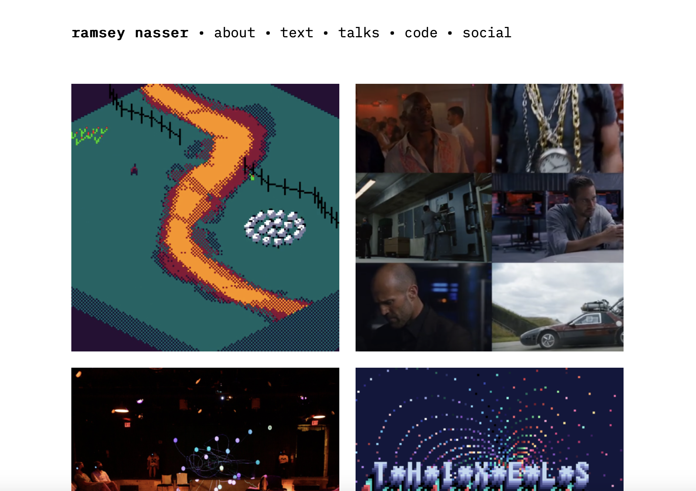
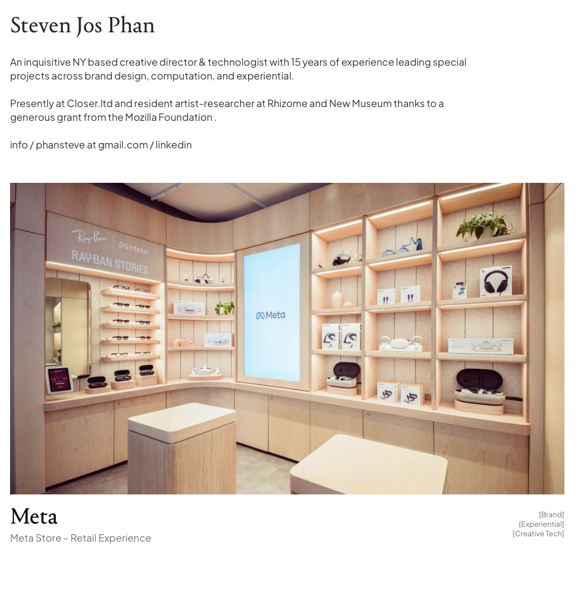

5 Inspiring Web Artists
Leo Castañeda
Leo Castañeda is a multimedia artist, exploring the intersection of technology and art through game design. One of Leo's recent web projects is the Camoflux Recall Grotto.

Maya Man
Maya Man is a contemporary internet artist exploring identity, femininity, and self-performance online, exhibiting globally and curating projects like HEART. My personal favorite project is: Maya Man A Realistic Day In My Life Living In New York City Oct 29, 2024–Oct 28, 2025

Shakti Mb
Shakti Mb, from South India and now in NYC, runs Two Shiny Coins, an experimental studio blending software, video, and web, and holds an MFA from Parsons. I find her work interesting since it intersects with film and web design.

Ramsey Nasser
Ramsey Nasser is a computer scientist, game designer, and media artist who creates games, tools, and interactive work. I like his pixel artwork and game design.

Steven Jos Phan
Steven Jos Phan is a NY-based creative director and technologist with 15 years leading brand, computational, and experiential projects. I find his extensive experience impressive, since he has worked with meta, a24, and Hermes.
